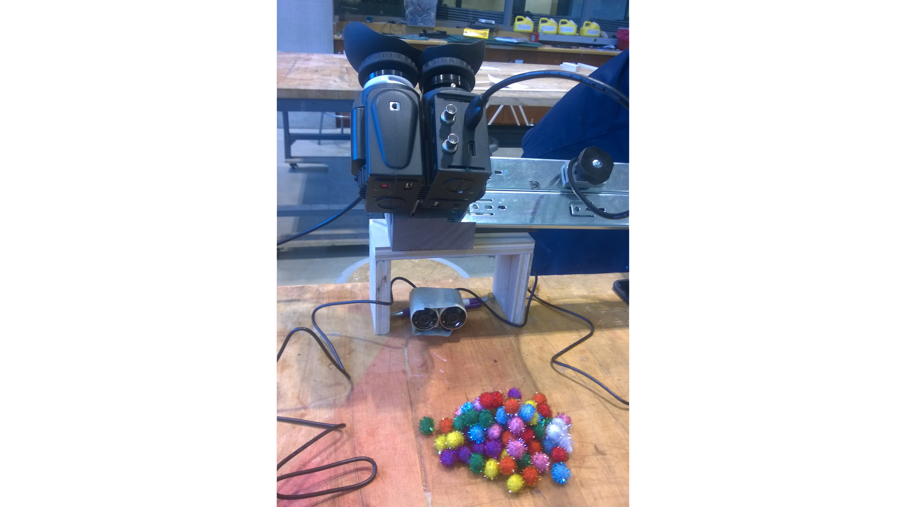
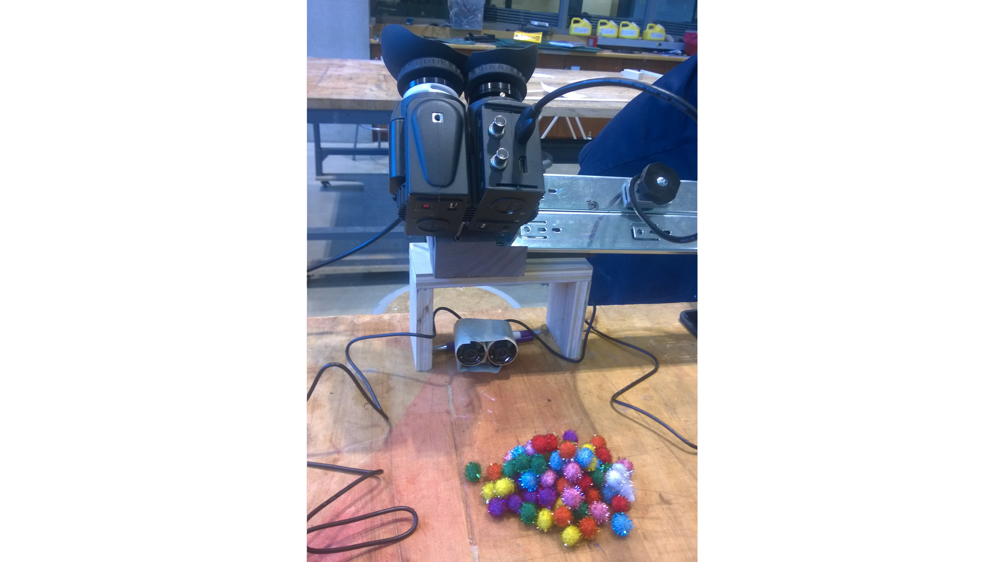

Sumobot 2016
When Feb - May 2016
Where Nanyang Technological University, Singapore
Main role Programmer, Electronics
I joined a lightweight Sumobot competition with four classmates in 2016. My main role was to program an autonomous fighting robot, using an Arduino Uno microprocessor.
Our Sumobot made it through the group stages undefeated, but lost to the winning Sumobot in the quarterfinal round. We won the Inspector Gadget prize for innovative Sumobot design.
 



Starting by Falling Down
This was a lightweight Sumobot competition; we could only make a robot that was maximum 12 cm in length and width, and 30 cm in height.
We realised that a tall and boxy Sumobot would be less stable than a short and wide one. We wanted to take advantage of the taller height allowance to increase the Sumobot's length.
To achieve this, we designed our Sumobot to start standing up, and tip over to get into its active position. The larger footprint also meant that we could house all components on one "layer", keeping the center of gravity low and increasing its stability.
Confusing the Enemy
The playing field was a black circular platform with a white border to mark the edges. The goal was to push the other Sumobot off the platform. We designed several white flaps that unfold and can slip under the other Sumobots.
This made it easier to push the opponent off in two ways. Firstly, the line detectors on the other Sumobot would detect the white of the flaps and move backwards, essentially blinding the opponent. Secondly, the flaps that slip under the opponent reduces their friction.
Outsmarting the Enemy
The Sumobot had to be fully autonomous. There was a line detector and an infra red sensor on each side of the Sumobot that detect the white border and objects ahead. The challenge was to optimise the algorithm for the Sumobot to use the data from its sensors to outsmart and out-maneuver the opponent.
We realised early on that simple algorithms (like turning right until the white border or the opponent is detected) are too slow and may result in the Sumobot "tracing" the white border but never finding the opponent.
The final algorithm we used in the competition consisted of 2 subroutines that were designed to increase the chance of the Sumobot facing the opponent head-on, especially after backing off from the white border.